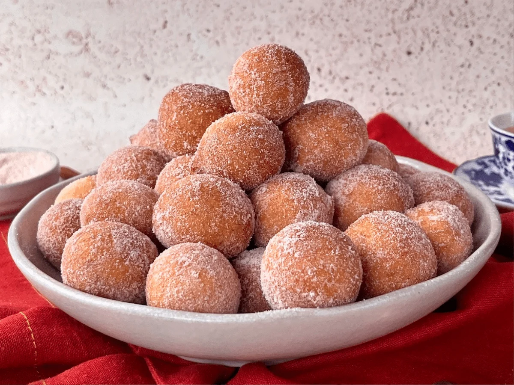

Home|
Receita 1|
Receita 2|
Receita 3|
Quais são os ingredientes para essa receita?
- 2 ovos médios
- 1/2 xícara de chá de açúcar (120 gramas)
- 1 xícara de chá de leite em temperatura ambiente (240 ml)
- 2 e 1/2 xícaras de chá de farinha de trigo (350 gramas)
- 1 colher de sopa de fermento químico em pó (fermento para bolo) (14 gramas)
- Óleo para fritar (de 500 a 800 ml)
- 1 xícara de chá de açúcar para finalizar (200 gramas)
- 1 colher de chá de canela para finalizar (2 a 5 gramas)
Qual o modo de preparo?
- Reúna todos os ingredientes do seu bolinho de chuva;
- Em uma tigela, coloque os ovos, o açúcar e o leite. Misture bem;
- Aos poucos, vá adicionando a farinha e mexendo sempre - tome cuidado para não empelotar;
- Assim que a massa estiver lisa e homogênea, acrescente o fermento químico em pó e misture delicadamente;
- Confira a consistência da massa, que não deve ficar muito mole;
- Leve uma panela ao fogo médio e esquente o óleo;
- Molde os bolinhos com a ajuda de duas colheres e coloque-os para fritar;
- Deixe fritar até ficarem bem douradinhos, e então, transfira-os para um prato com papel-toalha;
- Passe os bolinhos na mistura de açúcar e canela e sirva-os em seguida;
- Agora é só servir. Bom apetite!

Veja a receita completa